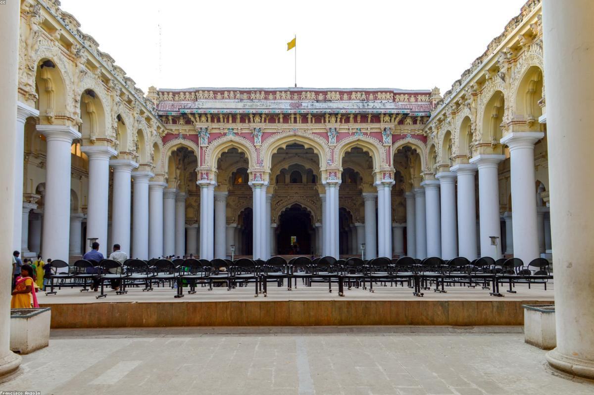

Tamil Nadu
Kodaikanal, a serene retreat nestled in the Palani Hills of the Western Ghats, is often referred to as the "Princess of Hill Stations." Unlike the colonial-founded Ooty, Kodaikanal was established by American missionaries and British bureaucrats in the mid-19th century as a refuge from the summer heat. The town is centered around the star-shaped Kodai Lake, which adds to its ethereal beauty. Characterized by rolling hills, dense forests, and plunging waterfalls, Kodaikanal remains a favorite destination for its quiet charm, mist-covered walkways like Coaker's Walk, and the rare Kurinji flowers that bloom once every twelve years.
Kodaikanal is situated in the Dindigul district of Tamil Nadu, at an altitude of 2,133 meters.
The best time to visit is from April to June for the summer escape, or September to January for a misty, lush green experience.
By Air: Madurai International Airport (approx. 120 km) is the nearest airport.
By Train: Kodai Road (approx. 80 km) is the nearest railway station.
By Road: Very well-connected by hilly roads; regular buses and taxis run from Madurai, Coimbatore, and Dindigul.
- Carry warm clothing throughout the year as evenings can be chilly.
- Be careful of the fog while driving on the ghat roads, especially during evenings.
- Kodaikanal is known for its homemade chocolates and natural oils; buy them from reputable shops.
- Respect the natural environment and avoid using plastics inside the forest areas.